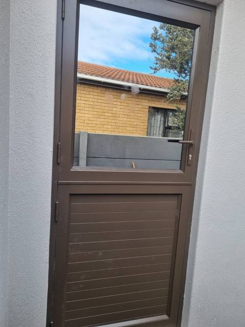
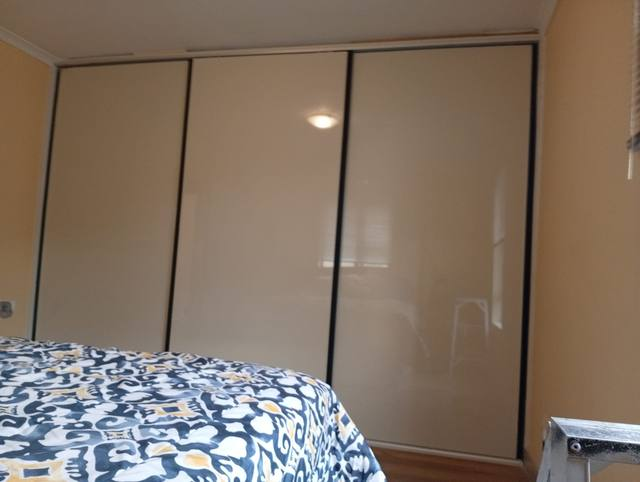
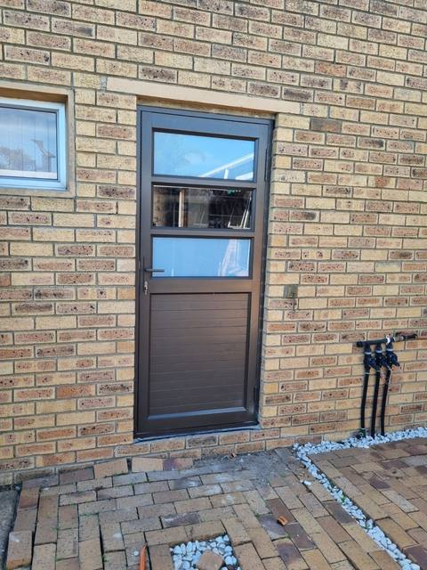

Renovation & woodworks in Wynberg
Wynberg ranges from the Victorian cottages of Chelsea Village to larger family homes, so we do both careful restoration and modern renovation here. We're often asked for restoring timber doors and windows, kitchen renovations, and built-in cupboards.
Examples of our work
From our projects across Cape Town.






Working in Wynberg
Wynberg ranges from the Victorian cottages of Chelsea Village and the area around Maynardville to larger family homes on Wynberg Hill. The older cottages have timber floors, sash windows and pressed ceilings worth keeping, while the bigger homes often need full modern renovations. So in Wynberg we do both careful restoration and new kitchens, built-ins and doors.
Kitchens · Built-in cupboards · Doors & garage doors · Furniture · Decks · Renovations →
Questions from Wynberg
Can you work on cottages in Chelsea Village?
Yes. We repair and match older timber doors and windows and fit kitchens and cupboards that suit the character of the house.
Can you restore sash windows in a Chelsea Village cottage?
Yes. We repair or remake frames and sashes to match the originals.
Can you modernise a kitchen in an old cottage without losing its character?
Yes. Classic door styles and natural timber can sit well in an old house while giving you a modern layout.